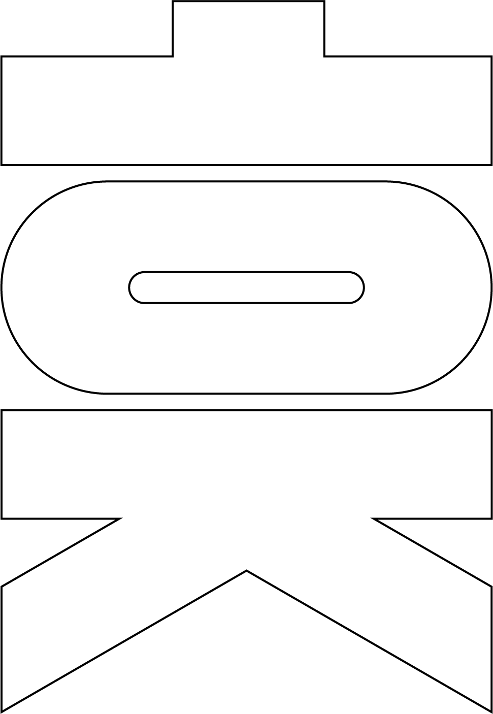

HyeonJun Kim,
Digital Media Design Major in Hongik univ.
Next paragraph is meaning of Blog.
A blog (a truncation of the expression "weblog") is a discussion or informational website published on the World Wide Web consisting of discrete, often informal diary-style text entries (posts). Posts are typically displayed in reverse chronological order, so that the most recent post appears first, at the top of the web page. Until 2009, blogs were usually the work of a single individual,[citation needed] occasionally of a small group, and often covered a single subject or topic. In the 2010s, "multi-author blogs" (MABs) emerged, featuring the writing of multiple authors and sometimes professionally edited. MABs from newspapers, other media outlets, universities, think tanks, advocacy groups, and similar institutions account for an increasing quantity of blog traffic. The rise of Twitter and other "microblogging" systems helps integrate MABs and single-author blogs into the news media. Blog can also be used as a verb, meaning to maintain or add content to a blog.
The emergence and growth of blogs in the late 1990s coincided with the advent of web publishing tools that facilitated the posting of content by non-technical users who did not have much experience with HTML or computer programming. Previously, a knowledge of such technologies as HTML and File Transfer Protocol had been required to publish content on the Web, and early Web users therefore tended to be hackers and computer enthusiasts. In the 2010s, the majority are interactive Web 2.0 websites, allowing visitors to leave online comments, and it is this interactivity that distinguishes them from other static websites.[2] In that sense, blogging can be seen as a form of social networking service. Indeed, bloggers do not only produce content to post on their blogs, but also often build social relations with their readers and other bloggers. However, there are high-readership blogs which do not allow comments.